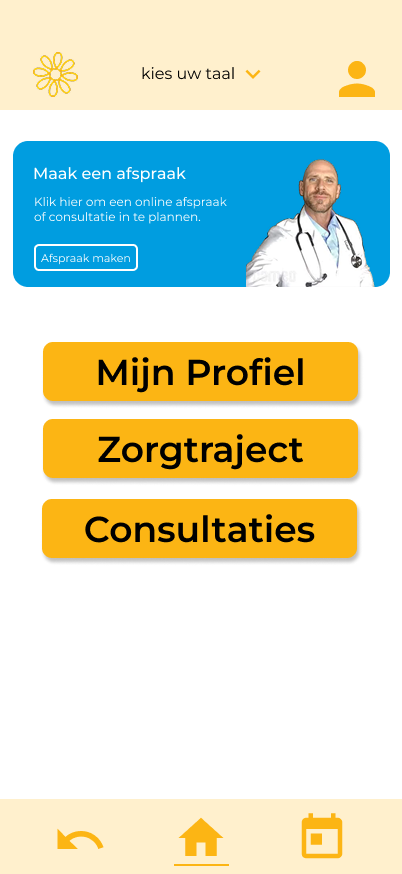
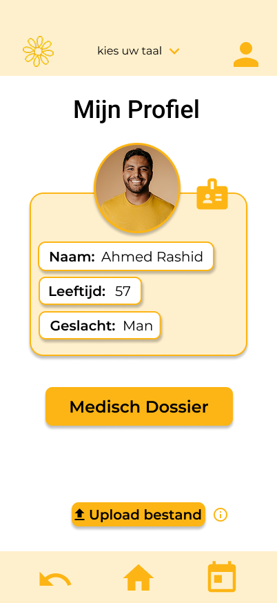

Medische informatie in een begrijpelijke taal. Wij helpen patiënten om hun zorgtraject beter te overzien en te begrijpen.
Bekijk Demo
Geen moeilijke vaktermen meer. Wij vertalen complexe medische info naar klare taal die iedereen begrijpt.
Slimme Taalfuncties:
Volg je medische stappen op de voet met een helder en visueel overzicht van je volledige traject.
Interactieve Flow:
Al je persoonlijke medische gegevens veilig op één plek, altijd binnen handbereik wanneer je ze nodig hebt.
Beheer en Ondersteuning:
